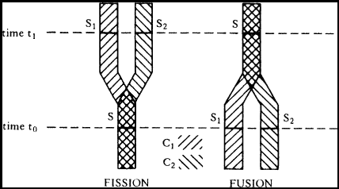

17 Survival and Identity
(Lewis 1983) seeks to reconcile two answers to the question of what matters in survival. (Parfit 1984) takes fission to support the incompatibility of two tentative responses to the question of what matters in survival.
For a person \(X\) at \(t\) to have what matters in survival is for \(X\) at \(t\) to be psychologically strongly connected and continuous with \(Y\) at a later time \(u\).
For a person \(X\) at \(t\) to have what matters in survival is for \(X\) at \(t\) to be numerically identical with a person \(Y\) at a later time \(u\).
In a case of fission, \(X\) at \(t\) is neither identical to \(Y\) at \(u\) or to \(Z\) at \(u\) even though it bears relation R to both \(Y\) at \(u\) and \(Z\) at \(u\). Here is how Lewis reconstructs Parfit’s argument for the incompatibility of the two theses:
- Identity is one-one, but Relation R may be one-many (or even many-one).
- Identity is all-or-nothing, but Relation R may fail to be all-or-nothing.
- Relation R matters in survival.
- Therefore, what matters in survival is not identity but rather Relation R.
As Lewis points out, you could alternatively start with the premise that what matters in survival is Relation I to conclude that relation R is not what matters in survival. However, he is interested in the compatibility between the two thesis given at the outset. On the one hand, we can agree that what matters in survival is Relation R, which may be one-many or even many-one, and, on the other, we can agree with common sense that what matters in questions of personal identity is identity.
17.1 The R-relation and the I-relation
The key observation to make, for Lewis, is that personal identity and Relation R have different relata:
Relation R relates person stages.
When you wonder whether you will survive the teletransporter, you have in mind the question of whether a certain person stage in Mars (or Venus or both) are appropriately R-related to your current stage.
Identity relates temporally extended persons.
When you wonder whether you will identical to someone on Mars after teletransportation, you have in mind whether you, as a temporally extended continuant, are identical to a temporally extended continuant that includes some future person stages in Mars (or Venus or both).
Since they have different relata, it is not clear that the answers are in fact comparable. But personal identity induces a relation on person stages. So, to facilitate comparison, we may focus on yet another relation on stages:
Relation I relates person stages if, and only if, they belong to one and the same temporally extended person.
To be I-related to a future stage after teletransportation is for there to be a temporally extended person which includes both the current and that future person stages as parts.
Once we do this, we may note:
- Relation I may be one-many (or even many-one).
- Relation I may fail to be all-or-nothing.
So, for all we know, Relation I and Relation R may happen to coincide. Indeed, Lewis is keen to argue:
A person stage is I-related and R-related to exactly the same stages.
This raises the question of what exactly is a person. On the one hand, a continuant person is an aggregate of I-interrelated person-stages. But not every such aggregate is a person, since we should exclude proper parts of such aggregates of I-interrelated stages. All of my twenty-first century stages are I-interrelated, but they do not form a person, they are at most a proper part of one.
A person is just a maximal I-interrelated aggregate of person-stages.
Furthermore:
\(X\) is a person if, and only if, \(X\) is a maximal R-interrelated aggregate of person-stages. That is, \(X\) is both an R-interrelated aggregate of person-stages, and \(X\) is not a proper part of an R-interrelated aggregate of person-stages.
17.2 Fission and Fusion
We are now in a position to reassess cases in which the I-Relation fails to be one-one. Fission provides cases in which the I-Relation is one-many, and fusion provides examples in which the I-Relation is many-one.

17.2.1 Fission
In cases of fission, we start with a prefission stage \(S\) at \(t_0\), which is R-related forward to two different simultaneous postfission stages \(S_1\) and \(S_2\) at \(t_1\). The forward R-elation is one-many, and the backward R-relation is many-one. Furthermore, the R-relation is not transitive because \(S_1\) is R-related to \(S\), which is R-related to \(S_2\), yet \(S_1\) is not R-related to \(S_2\).
Identity is transitive, but the I-relation is not identity. Nor is the I-relation transitive once we notice that there are at least two different continuant persons involved: \(C_1\) and \(C_2\). Much like before, \(S_1\) is I-related to \(S\) via \(C_1\), which is I-related to \(S_2\) via \(C_2\), yet \(S_1\) is not I-related to \(S_2\).
Both continuant persons \(C_1\) and \(C_2\) overlap, but notice that the common proper part, while an aggregate of I-interrelated person stages, is not itself a person, since it is not maximal. The common section is a proper part of two different maximal aggregates of I-interrelated person stages.
So, we had two different persons all along, who share all of their prefission person stages. One way to retain the appearence of one is to distinguish between two different relations: identity and identity-at-$t$.
\(C\) and \(D\) are identical-at-t iff they both exist at \(t\) and their stages at \(t\) are identical.
So, \(C_1\) and \(C_2\) are identical up until \(t_0\), but they are not identical at \(t_1\). Call this relation between possibly distinct persons tensed identity. When we count by tensed identity, we find that there is only one person up until \(t_0\) and two people immediately afterwards. The thought now is that in cases of fission and fusion, we may, if we like, count by tensed identity and find a different count than if we count by identity.
17.2.2 Fusion
In cases of fusion, we start with two prefusion stages \(S_1\) and \(S_2\) at $t_0$, which are R-related forward to a single postfusion stage \(S\) at \(t_1\). The forward R-elation is many-one, and the backward R-relation is one-many. Furthermore, the R-relation is not transitive because \(S_1\) is R-related to \(S\), which is R-related to \(S_2\), yet \(S_1\) is not R-related to \(S_2\).
The I-relation is not transitive either. We have two continuant persons \(C_1\) and \(C_2\), which begin to overlap after fusion. The common section is a proper part of two different maximal aggregates of I-interrelated person stages, and therefore not itself a person.